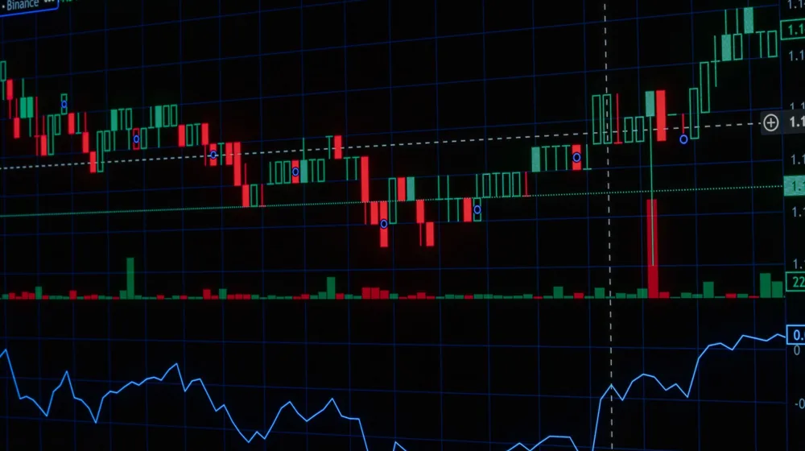

코스닥 소형주 투자, 이 3가지 조건 모르면 손해! 완벽 가이드
사진: Max Bonda / Pexels (무료 이미지, 출처 표기)
코스닥 소형주, 왜 지금 주목해야 할까요?

새로운 성장 동력을 찾는 투자자라면 코스닥 소형주에 관심을 가질 수 있습니다. 코스닥 시장은 기술력과 혁신성을 갖춘 중소·벤처기업이 주로 상장되어 있으며, 이 중에서도 시가총액이 상대적으로 작은 소형주는 높은 성장 잠재력과 함께 큰 수익률을 기대하게 합니다.
하지만 잠재력이 큰 만큼 위험도 따릅니다. 정보가 부족하거나 변동성이 크기 때문에 신중한 접근이 필요합니다. 이 글에서는 코스닥 소형주 투자 전 꼭 알아야 할 핵심 조건과 주의사항, 그리고 실제 투자 절차를 상세히 안내해 드립니다.
코스닥 소형주, 무엇이 다르고 어떤 기회가 있을까요?
코스닥 시장의 소형주는 주로 IT, 바이오, 콘텐츠 등 신기술 및 성장 산업 분야에 집중되어 있습니다. 이들은 시장 전체가 성장하거나 특정 산업의 호황을 맞이할 때 빠르게 주가가 상승할 수 있는 특징을 가집니다. 특히 초기 단계의 기업이 성공적인 사업 모델을 구축할 경우, 주식 가치가 폭발적으로 증가하는 '대박' 종목이 될 가능성도 있습니다.
반면, 소형주는 대형주에 비해 유동성(거래량)이 낮아 매매가 어렵거나, 기업 정보가 제한적일 수 있습니다. 또한, 실적 변동성이 커서 한 번의 악재에도 주가가 급락할 위험이 있어 투자 전 면밀한 분석이 필수적입니다.
성공적인 코스닥 소형주 투자를 위한 필수 조건
코스닥 소형주를 선택할 때는 단순한 테마나 소문에 의존하기보다, 기업의 본질적인 가치와 성장 잠재력을 평가하는 것이 중요합니다. 다음 체크리스트를 활용하여 투자 대상을 선별해 보세요.
위 지표들은 기업의 성장 가능성과 안정성을 판단하는 데 중요한 기준이 됩니다. 특히 소형주는 특정 산업 트렌드에 민감하게 반응하므로, 해당 산업의 전망과 정부 정책 방향도 함께 고려해야 합니다. 한국거래소(KRX) 정보데이터시스템에서 상장 기업들의 재무 정보를 확인할 수 있습니다.
놓치지 말아야 할 코스닥 소형주 투자 시 유의점
소형주 투자는 고수익의 기회를 제공하지만, 그만큼 높은 위험을 수반합니다. 다음 사항들을 숙지하고 현명하게 투자해야 합니다.
- 높은 변동성 이해하기: 소형주는 시장의 작은 이슈에도 주가가 크게 출렁일 수 있습니다. 단기적인 주가 등락에 일희일비하기보다 장기적인 관점에서 접근하는 것이 중요합니다.
- 정보 불균형 인식하기: 대형주에 비해 기업 분석 리포트나 시장 정보가 부족할 수 있습니다. 투자 전 충분한 자체 조사를 통해 정보를 확보해야 합니다.
- 분산 투자 실천하기: 특정 종목에 과도하게 집중하는 것은 위험합니다. 여러 소형주 또는 대형주와 소형주를 섞어 분산 투자하여 위험을 줄이는 것이 바람직합니다.
- 손절매 원칙 세우기: 예상과 다른 방향으로 주가가 움직일 경우, 손실을 제한하기 위한 명확한 손절매 기준을 설정하고 이를 지키는 규율이 필요합니다.
코스닥 소형주, 어떻게 매매해야 할까요?
코스닥 소형주 매매 절차는 일반적인 주식 거래와 크게 다르지 않습니다. 다음 단계에 따라 투자를 시작할 수 있습니다.
- 증권 계좌 개설: 먼저 증권사(예: 키움증권, 미래에셋증권, 삼성증권 등)를 통해 주식 거래가 가능한 증권 계좌를 개설해야 합니다. 비대면 계좌 개설 앱을 이용하면 신분증과 본인 명의 휴대폰만으로도 쉽게 개설할 수 있습니다.
- 투자금 입금: 개설한 증권 계좌에 주식을 매수할 자금을 이체합니다.
- 종목 선정 및 분석: 앞서 제시된 체크리스트와 유의점을 바탕으로 투자할 코스닥 소형주를 선정하고, 기업의 사업보고서, 재무제표, 뉴스 등을 면밀히 분석합니다.
- 매매 주문: 증권사 HTS(Home Trading System)나 MTS(Mobile Trading System) 앱을 통해 원하는 종목의 주식 수량과 가격을 입력하여 매수/매도 주문을 합니다. 시장가, 지정가 등 다양한 주문 방식을 활용할 수 있습니다.
모든 투자 결정은 본인의 책임하에 이루어지므로, 투자 전 반드시 충분한 학습과 정보 탐색을 하시길 권장합니다. 2026년 10월 현재, 대부분의 증권사에서 비대면 계좌 개설 및 주식 거래를 지원하고 있습니다. 자세한 매매 방법은 이용하시는 증권사의 안내를 참고하시기 바랍니다.
자주 묻는 질문으로 궁금증 해소
- Q: 코스닥 소형주 투자는 초보자에게도 괜찮을까요?
A: 초보 투자자에게는 변동성이 큰 소형주보다 비교적 안정적인 대형주나 인덱스 펀드 투자를 통해 시장 경험을 쌓는 것을 먼저 추천합니다. 소형주 투자는 충분한 학습과 리스크 관리 능력이 뒷받침될 때 도전하는 것이 좋습니다. - Q: 소형주 투자를 위한 정보는 어디서 얻을 수 있나요?
A: 한국거래소(KRX) 정보데이터시스템, 금융감독원 전자공시시스템(DART), 각 증권사의 리서치 자료, 뉴스 및 경제 매체 등을 통해 기업 정보를 얻을 수 있습니다. 직접 기업 IR(투자자 관계) 자료를 확인하는 것도 좋은 방법입니다. - Q: 소형주 급등락 시 어떻게 대처해야 하나요?
A: 급등 시에는 과도한 탐욕을 경계하고, 애초에 설정한 목표가에 도달했다면 일부 이익 실현을 고려합니다. 급락 시에는 당황하기보다 투자 원칙과 손절매 기준에 따라 침착하게 대응하는 것이 중요합니다. 감정적인 매매는 피해야 합니다.
🔗 이 글도 함께 보면 좋아요: 배당주 투자, 장점만 보고 시작했다간? 손실 피하는 완벽 비교 가이드